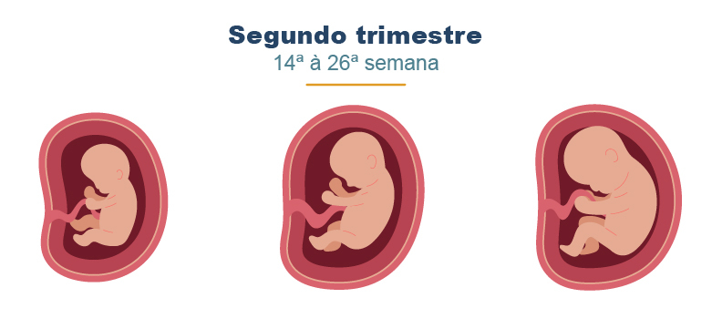

O bebê cresce rapidamente, começa a se mexer bastante, as feições ficam mais definidas e os sentidos vão se desenvolvendo.
Curiosidade: Nessa fase, o bebê já consegue ouvir a voz da mãe, escutar o batimento do seu coração, chupa o dedinho e reage a sons externos!
 ⬅ Voltar para o 1º semestre Avançar para o 3º semestre ➡